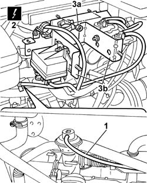
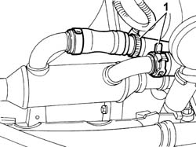
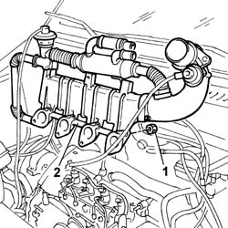
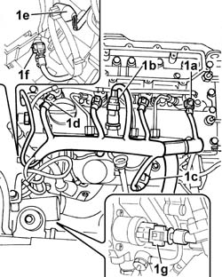
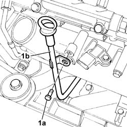
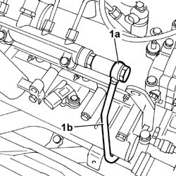
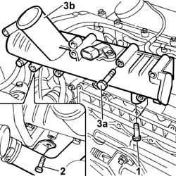
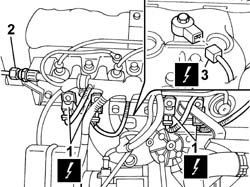
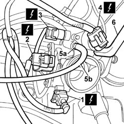
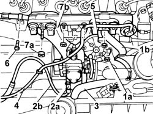

1072B10 INLET MANIFOLD - R + R AND REPLACE SEAL
- Path
- Procedures > 10 ENGINE UNIT > 1072 INLET AND EXHAUST MANIFOLDS > 1072B INLET MANIFOLDS > 1072B10 INLET MANIFOLD - R + R AND REPLACE SEAL
- Kind
- repair procedure (removal / refitting; the operation number is the code)
- Applies to
- engines: 2.0 16V, 2.0 JTD 8V, 2.3 JTD 16V; all production periods
- Interactive page
- https://sloeber94.github.io/elrnDB-fDct/en/#/244000873
Applies to: engines: 2.0 JTD 8V; all production periods
 Removing
Removing
 Refitting
Refitting- Position the vehicle on the lift.
Op. 7055B54 UNDER-ENGINE GUARD - R R
See in Op. 1048A21
See in Op. 1048A50
Op. 1048B16 PIPES AND/OR ELBOW BETWEEN TURBOCHARGER AND THROTTLE CASING - R.R.
Op. 1048B12 RIGID PIPE CARRYING AIR BETWEEN TURBOCHARGER AND INLET MANIFOLD - R+R
See in Op. 1076B50
See in Op. 1064A19
See in Op. 1088B10
See in Op. 1080C17
1. Disconnect the vacuum pipe from the EGR valve.
2. Disconnect the electrical connection for the heater plugs control unit.
 | Description | Connector |
|---|---|---|
2 | Heater plugs control unit | M015C |
3. Undo the fixing nuts (3a) and move the mounting bracket (3b) complete with solenoid valve and heater plugs control unit aside.

Applies to: engines: 2.0 JTD 8V; all production periods
1. Disconnect the two engine coolant pipes on the exhaust gas heat exchanger.

Applies to: engines: 2.0 JTD 8V; all production periods
1. Undo the lower nuts and the upper bolts fixing the intake manifold to the cylinder head.
- Lower the lift.
2. Remove the intake assembly from the upper part of the engine compartment.

Applies to: engines: 2.0 JTD 8V; all production periods
Refitting
Removing- Fit the intake assembly to the upper part of the engine compartment.
- Raise the vehicle.
- Tighten the lower nuts and the upper bolts fixing the intake manifold to the cylinder head to torque.
 | Value - daNm | Fastening | Component | Ø |
|---|---|---|---|---|
. | 2,3 | Bolt | INLET MANIFOLD | - |
| Value - daNm | Fastening | Component | Ø |
|---|---|---|---|---|
. | 2,3 | Nut | INLET MANIFOLD | - |
- Connect the engine coolant pipes on the exhaust gas heat exchanger.
- Fit the mounting bracket complete with solenoid valves and heater plugs control unit in the housing.
- Tighten the bulkhead fixing nuts.
- Connect the electrical connection for the heater plugs control unit.
| Description | Connector |
|---|---|---|
. | Heater plugs control unit | M015C |
- Connect the vacuum pipe to the EGR valve.
See in Op. 1080C17
See in Op. 1088B10
See in Op. 1064A19
See in Op. 1076B50
Op. 1048B12 RIGID PIPE CARRYING AIR BETWEEN TURBOCHARGER AND INLET MANIFOLD - R+R
Op. 1048B16 PIPES AND/OR ELBOW BETWEEN TURBOCHARGER AND THROTTLE CASING - R.R.
See in Op. 1048A50
See in Op. 1048A21
Op. 0010T21 COOLANT CHECK DENSITY AND TOP UP IF NECESSARY
Op. 7055B54 UNDER-ENGINE GUARD - R R
- Position the vehicle on the lift.
Applies to: engines: 2.3 JTD 16V; all production periods
Removing
RefittingSee in Op. 1060F20
1. Disconnect the electrical connections:
| Description | Connector |
|---|---|---|
1a | Injector | N070A |
| Description | Connector |
|---|---|---|
1a | Injector | N070B |
| Description | Connector |
|---|---|---|
1a | Injector | N070C |
| Description | Connector |
|---|---|---|
1a | Injector | N070D |
| Description | Connector |
|---|---|---|
1b | Fuel pressure sensor | K083 |
| Description | Connector |
|---|---|---|
1c | Air pressure - temperature sensor | K044 |
| Description | Connector |
|---|---|---|
. | Heater plugs | A040A |
| Description | Connector |
|---|---|---|
. | Heater plugs | A040B |
| Description | Connector |
|---|---|---|
. | Heater plugs | A040C |
| Description | Connector |
|---|---|---|
. | Heater plugs | A040D |
| Description | Connector |
|---|---|---|
1d | Timing sensor | K047 |
| Description | Connector |
|---|---|---|
1e | Coolant temperature sending unit (for instrument panel) | K035 |
| Description | Connector |
|---|---|---|
1f | Engine coolant temperature sensor/sender unit | K036 |
| Description | Connector |
|---|---|---|
1g | Fuel pressure regulator | N077 |
- Release the wiring from the bands and move it to the side.

Applies to: engines: 2.3 JTD 16V; all production periods
1. Undo the fixing bolt (1a) and remove the engine oil dipstick pipe (1b).

Applies to: engines: 2.3 JTD 16V; all production periods
1. Undo the connector (1a) and disconnect the fuel pipe (1b) from the fuel manifold.

Applies to: engines: 2.3 JTD 16V; all production periods
1. Undo the lower fixing bolts (1a) joining the intake manifold to the bracket for the rigid water supply pipes (1b) from the thermostat.
2. Undo the bolt fixing the water supply pipe to the pump.
3. Undo the fixing bolts (3a) and remove the air intake manifold (1b).
- Recover the underlying gasket.

Applies to: engines: 2.3 JTD 16V; all production periods
Refitting
Removing- Fit the new metal rubber intlet manifold gasket.
- Fit the intake manifold.
- Tighten the bolts fixing the intake manifold to the cylinder head to torque.
| Value - daNm | Fastening | Component | Ø |
|---|---|---|---|---|
. | 2.5 | Bolts | INLET MANIFOLD | M8 |
- Tighten the bolt fixing the pump water supply rigid pipe bracket to the intake manifold.
- Tighten the bolt fixing the engine oil dipstick pipe.
- Screw in the connector for the return pipe from the single fuel manifold to the return manifold and tighten it to torque.
| Value - daNm | Fastening | Component | Ø |
|---|---|---|---|---|
. | 4 | Connector | INJECTOR FUEL MANIFOLD (DIESEL) | M16 |
- Position the injection wiring and connect the electrical connections disconnected previously.
| Description | Connector |
|---|---|---|
. | Injector | N070A |
| Description | Connector |
|---|---|---|
. | Injector | N070B |
| Description | Connector |
|---|---|---|
. | Injector | N070C |
| Description | Connector |
|---|---|---|
. | Injector | N070D |
| Description | Connector |
|---|---|---|
. | Fuel pressure sensor | K083 |
| Description | Connector |
|---|---|---|
. | Air pressure - temperature sensor | K044 |
| Description | Connector |
|---|---|---|
. | Heater plugs | A040A |
| Description | Connector |
|---|---|---|
. | Heater plugs | A040B |
| Description | Connector |
|---|---|---|
. | Heater plugs | A040C |
| Description | Connector |
|---|---|---|
. | Heater plugs | A040D |
| Description | Connector |
|---|---|---|
. | Timing sensor | K047 |
| Description | Connector |
|---|---|---|
. | Fuel pressure regulator | N077 |
See in Op. 1060F20
Applies to: engines: 2.0 16V; all production periods
Removing
RefittingOp. 1048A31 RIGID PIPE CONNECTING AIR CLEANER TO INLET MANIFOLD RIGID PIPE R R
1. Disconnect the electrical connections for the injectors.
2. Working on the connector, disconnect the coupling for the fuel supply pipe to the single manifold.
3. Disconnect the electrical connection for the detonation sensor.

Applies to: engines: 2.0 16V; all production periods
1. Disconnect the connection for the air temperature sensor.
2. Disconnect the connection for the throttle opening sensor.
3. Disconnect the connection for the idle air heater.
4. Disconnect the connection for the idle speed adjustment stepping motor.
5. Working on the retaining band (5a), release the petrol vapour recovery pipe (5b).
6. Release the oil vapour recovery pipe.

Applies to: engines: 2.0 16V; all production periods
1. Undo the fixing nut (1a) and move the mounting bracket for the oil vapour separator (1b) aside.
2. Work on the band (2a) and release the petrol vapour recovery pipe (2b).
3. Release the oil vapour recovery pipe.
4. Release the absolute pressure sensor pipe.
5. Release the accelerator control cable and move it aside.
6. Undo the bolt fixing the mounting bracket for the fuel supply pipe connector.
7. Undo the fixing nuts (7a) and remove the intake manifold (7b).

Applies to: engines: 2.0 16V; all production periods
- Dismantle the intake manifold at the bench.
Applies to: engines: 2.0 16V; all production periods
Refitting
Removing- Fit the intake manifold.
- Tighten the bolts fixing the intake manifold.
- Tighten the bolt fixing the mounting bracket for the fuel supply pipe connector.
- Position the accelerator control cable.
- Position the absolute pressure sensor pipe.
- Position the oil vapour recovery pipe.
- Position the petrol vapour recovery pipe.
- Tighten the band securing the petrol vapour recovery pipe.
- Position the oil vapour separator mounting bracket.
- Tighten the nut fixing the oil vapour separator mounting bracket.
- Position the oil vapour recovery pipe.
- Connect the electrical connection for the idle speed adjustment stepping motor.
- Connect the electrical connection to the idle air heater.
- Connect the electrical connection for the throttle opening sensor.
- Connect the electrical connection for the air temperature sensor.
- Connect the electrical connection for the detonation sensor.
- Working on the connector, connect the coupling for the fuel supply pipe to the single manifold.
- Connect the electrical connections for the injectors.
Op. 1048A31 RIGID PIPE CONNECTING AIR CLEANER TO INLET MANIFOLD RIGID PIPE R R
Topics linked from this page (5)
- 0010T21 COOLANT CHECK DENSITY AND TOP UP IF NECESSARY
- 1048A31 RIGID PIPE CONNECTING AIR CLEANER TO INLET MANIFOLD RIGID PIPE R R
- 1048B12 RIGID PIPE CARRYING AIR BETWEEN TURBOCHARGER AND INLET MANIFOLD - R+R
- 1048B16 PIPES AND/OR ELBOW BETWEEN TURBOCHARGER AND THROTTLE CASING - R.R.
- 7055B54 UNDER-ENGINE GUARD - R R